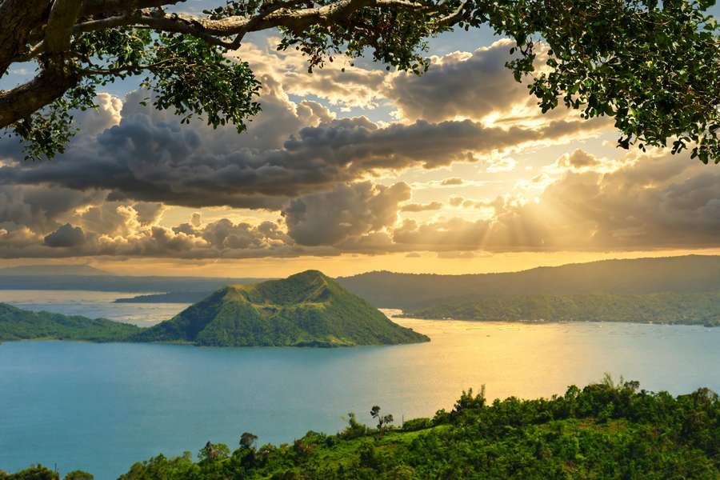

Tagaytay is the day trip; Taal Volcano is the view. Keep that order in mind and the whole plan gets easier. The ridge town sits roughly 600 to 700 meters above sea level, about 55 to 65 kilometers south of Manila, and on a clear morning it looks straight down at Taal Lake and the small volcanic island in its middle. You can be there for breakfast, eat bulalo for lunch and be back in the city by dinner.
What you cannot do anymore is cross the lake and climb to the crater. Since the January 2020 eruption, Volcano Island has been a Permanent Danger Zone under PHIVOLCS. Landing, trekking and staying on the island are prohibited, and that stays true even on days when the alert level is low. Plenty of older blog posts and tour flyers still show horse rides up the crater trail, so anyone planning from those will arrive expecting something that no longer exists legally.
This guide covers the trip as it works now: which viewpoints are worth the stop, what a lake boat ride can and cannot include, how to get down from Manila, what a day costs in pesos, and when the volcano is most likely to actually show itself.

Where to see Taal from the Tagaytay ridge
Picnic Grove is the stop most families make first. It has cottages, horseback rides on a short loop, a zipline and an open view of the lake. Expect a small entrance fee (around PHP 50 per person), with cottages, rides and the zipline priced separately. Weekends fill up with groups from Metro Manila, so a weekday visit feels very different.
People's Park in the Sky is on Mt. Sungay, the highest point in town. It was built as a Marcos-era mansion that was never finished and later turned into a public park, and from the top you get a wide circle of views over the lake, Batangas and Cavite. Entrance is cheap, usually PHP 30 to 50, plus a little for parking. Jeepneys and tricycles run up from the main road, and the last stretch is a short walk.
The rest of the ridge is cafes and restaurants along the Tagaytay–Nasugbu road. You pay for coffee and food rather than a gate fee, and many have terraces facing the lake. Budget around PHP 300 to 600 per person for a drink and a light meal. Near the Mahogany Beef Market, the eateries serve bulalo in pots meant for sharing, which is the cheapest way to have the town's best-known dish.
The lake: what boat rides look like now
Down in Talisay, on the lake shore, some boat operators now run sightseeing loops that stay at a safe distance from Volcano Island. A typical loop takes 30 to 45 minutes and costs PHP 1,500 to 2,500 for the whole boat, which a group of four to six can split. A barangay or environmental fee of PHP 50 to 100 per person may be added for lake use.
Before you step on board, ask one plain question: "Do we land?" The right answer is no. If a boatman offers to take you to the crater for an extra fee, or mentions a landing "permit," walk away. Tourists are not issued permits to land or trek, and the island has toxic gas, sudden steam-driven blasts and very little rescue access. While you're at it, check that there's a life vest for every passenger and that the price is agreed before the engine starts.
Getting to Talisay means a steep zigzag road down from the ridge, about 30 minutes by jeepney, tricycle or car. It is noticeably hotter and more humid at lake level, so dress for that.
Check the volcano before you leave
Taal is active, and its status changes. On the morning of your trip, read the latest bulletin on the PHIVOLCS website (phivolcs.dost.gov.ph). When the alert level goes up, volcanic smog, or vog, can drift over the ridge as a hazy, sulfur-smelling layer that irritates the throat and eyes. Pack a mask if you have sensitive lungs, carry water and shorten your time outdoors if the air feels off. If the alert reaches Level 3, cancel the trip.
Drones near Taal also need clearance, so leave yours at home unless you've arranged it properly.
Getting to Tagaytay from Manila
Bus
The cheapest way down. Buses leave from PITX in Parañaque and from terminals along EDSA and in Buendia, signed for Tagaytay, Nasugbu or Batangas via Tagaytay. Fares for aircon buses are roughly PHP 100 to 180 each way. Ask the conductor to let you off at Olivarez Plaza or the Tagaytay Rotonda, then use jeepneys (PHP 30 to 50) to reach the viewpoints.
Van
UV Express vans make fewer stops and usually charge PHP 150 to 250. With clear roads, the trip takes about 1.5 to 2 hours.
Car or ride-hailing
For three or four people, a private car is the easiest choice. A one-way ride-hailing trip can cost PHP 2,000 to 4,500, and tolls on SLEX and CALAX add around PHP 200 to 350 each way if you drive yourself. Metro Manila traffic decides everything: the drive can take 1.5 hours or closer to 4.
Guided tour
Day tours with hotel pickup run around PHP 4,500 to 7,000 per person and usually cover the ridge viewpoints, a lunch stop and sometimes a lake boat. None should include a landing on the island. Read the inclusions before you pay.
A day that works
Leave Manila at 6:00 AM so you reach the ridge before the haze builds. Have breakfast with a view around 8:30, then visit People's Park or Picnic Grove by 9:30. Take an early lunch of bulalo near Mahogany Market at 11:30. If you want the lake, head down to Talisay around 1:00 PM for a boat loop and come back up by mid-afternoon. Coffee on the cafe strip fills the gap until 4:30, which is a sensible time to start back before the evening traffic gets worse.
Flying into Manila for this? Don't try to fit Tagaytay between landing and a same-day connection. Arrive, sleep in the city, go south early the next morning and fly out that evening. Our 24-hour Manila stopover guide can fill the first evening, and if you need a base with easy airport access, see the notes on BGC and Makati for first-timers.
What a day costs
Going solo by bus, plan on PHP 1,200 to 2,500 for the day. That covers the return bus (PHP 200 to 400), local jeepneys and tricycles (PHP 100 to 300), park fees (PHP 80 to 150), a shared bulalo lunch and a cafe stop, plus your share of a lake boat if you join one.
Four friends sharing a car can expect PHP 4,000 to 7,000 total for car, gas and tolls, or about PHP 1,000 to 1,750 each before food. Guided tours sit at PHP 4,500 to 7,000 per person with transport included.
Prices go up on weekends, long holidays and from December into early January. Park and lake fees are set locally and can change, so confirm them at the gate.
When to go
November to April is the dry season and gives the clearest views. December to February is the coolest stretch, with the ridge often in the high teens to mid-20s °C while Manila sits around 30 °C. March to May turns hot, but mornings are still clear.
From June to October, clouds often settle over the lake by late morning, fog can hide the volcano completely, and the Talisay road gets slippery. If that's your only window, be on the ridge before 10 AM. If you want a cooler escape with a different kind of mountain town, the case for Baguio right now is worth reading too.
Small things that help
Bring a light jacket for the ridge and lighter clothes for the lake. Binoculars are worth packing: the island's shape changed after 2020, with new craters and bare patches where it used to be green, and you can spot the differences from the viewpoints. Try tawilis, the small sardine that lives only in Taal Lake, at an established restaurant, and ask whether it's on the menu that day, since supply varies. Take buko pie or a tart home instead of a souvenir.
Worth the early start?
Yes, as long as you treat it as a ridge-and-lake day rather than a volcano hike. You get cooler air, some of the best food stops within reach of Manila and a clear view of an active volcano that has visibly changed in recent years. Watch it from the ridge or a legal boat loop, spend your money with Talisay's lakeside eateries, and leave the island alone.